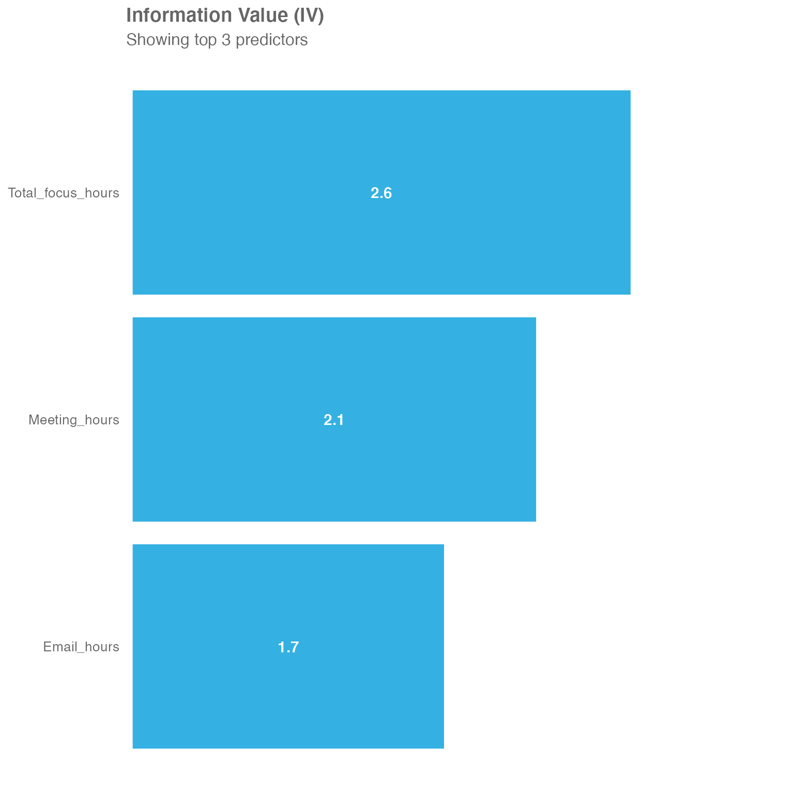

vignettes/IV-report.Rmd
IV-report.RmdThis post will give you a short introduction to the data exploration technique information Value (IV) and how to use it as part of the wpa R package.
After setting the stage, we will have a look at how this can be used to identify potential predictors for survey responses.
Information Value (IV) refers to a data exploration technique that helps determine which variables in a dataset have predictive power or influence on the value of a dependent variable. This technique delivers an IV score, which in itself tells you whether one variable A is a good predictor for another (say B). If A has a low information value, it is potentially not be a good predictor for variable B, and vice versa. Unlike other methods of measuring relationship between variables, such as correlation or simple linear regression, the IV score is calculated with in terms of how well a specific variable A can distinguish between a binary response in a target variable B.
Imagine you have you have a simple yes/no question, e.g. “Are you satisfied with your current work-life-balance?”. The answer to that question, which only has two possible values, is defined as variable B, and each value in that variable as b. We also have a variable A, which is the average weekly total of after-hours collaboration time, and each value in A is denoted as a.
Let’s assume the values for a and b are captured for 10000 employees, and are contained in the two variable-columns A and B. On a row-wise basis, each a in A links to a b in B. Based on these values, the information value for A can be calculated.
For this purpose, data is separated into different buckets or bins, with the same quantity of data (responses) in each of them. Here we are choosing 5 bins, therefore 20% of responses in each of them.
The numbers and distributions in this example are exaggerated for illustrative purposes:
| Avg. weekly after-hours | Total # of responses | # of negative responses | # of positive responses |
|---|---|---|---|
| 0-2 | 2000 | 200 | 1800 |
| 2-4 | 2000 | 350 | 1650 |
| 4-6 | 2000 | 800 | 1200 |
| 6-8 | 2000 | 1200 | 800 |
| 8-10 | 2000 | 1400 | 600 |
The information value is then calculated using the following formula:
\[IV=∑(ProportionPositive_i-ProportionNegative_i)*ln(\frac{ProportionPositive_i}{ProportionNegative_i})\]
A component in calculating IV is the Weight of Evidence (WoE), which is the logarithmic part within the formula above:
\[WeightOfEvidence=ln(\frac{ProportionPositive_i}{ProportionNegative_i})\]
WOE describes the relationship between a predictor variable and a binary target variable for each bin, while IV measures the strength of that total relationship across all the bins.
Applying this to the table above, we get the following:
| Avg. weekly after-hours | Total # of responses | # of negative responses | # of positive responses | WOE |
|---|---|---|---|---|
| 0-2 | 2000 | 200 | 1800 | 1.438 |
| 2-4 | 2000 | 350 | 1650 | 0.791 |
| 4-6 | 2000 | 800 | 1200 | -0.354 |
| 6-8 | 2000 | 1200 | 800 | -1.165 |
| 8-10 | 2000 | 1400 | 600 | -1.607 |
The first two bins (0-2 and 2-4) show a positive WOE value. This means the percentage of positive responses is higher than the percentage of negative responses. For the other three bins (4-6, 6-8, and 8-10), we can observe a negative WOE value, which means that the percentage of “negative responses” is higher than the percentage of “positive responses”. Therefore, respondents with 0 to 4h in average weekly after-hours seem to answer more positively on the work-life-balance question.
With the WOE calculated, we can apply the full IV calculation to the table:
| Avg. weekly after-hours | Total # of responses | # of negative responses | # of positive responses | WOE | IV |
|---|---|---|---|---|---|
| 0-2 | 2000 | 200 | 1800 | 1.438 | 0.3621 |
| 2-4 | 2000 | 350 | 1650 | 0.791 | 0.1309 |
| 4-6 | 2000 | 800 | 1200 | -0.354 | 0.0331 |
| 6-8 | 2000 | 1200 | 800 | -1.165 | 0.3772 |
| 8-10 | 2000 | 1400 | 600 | -1.607 | 0.7053 |
In terms of predictiveness you can use the following table as a reference:
| IV value | predictiveness |
|---|---|
| Less than 0.02 | Not useful for prediction |
| 0.02 to 0.1 | Weak predictive power |
| 0.1 to 0.3 | Medium predictive power |
| 0.3 to 1.0 | Strong predictive power |
| > 1.0 | Very strong predictive power |
Therefore in this example, after-hours seem to have a strong predictive power regarding the answer to “Are you satisfied with your current work-life-balance?”. This data exploration technique builds the foundation for predictor analysis using the wpa R package.
As of writing this article, there are two IV functions included as part of the wpa R package - create_IV() and IV_report(). To run either of those, you will need to ensure that the package has been successfully installed for your version of R. For more information on the installation process, please check out https://microsoft.github.io/wpa.
create_IV() function
Let’s start with create_IV(). For data input, the create_IV() function uses a standard person query dataset. The wpa package already brings a set of built-in datasets for testing purposes. The ready-to-use standard person query dataset is called sq_data and will be used for this section of the post.
To get started, open a new session in R and load the following packages:
The general format looks like this:
create_IV(
data,
predictors = NULL,
outcome,
bins = 5,
return = "plot")At minimum, you need to supply the data argument, which is a Person Query dataset in the form of a data frame and the variable you want to calculate the IV for (outcome) to run the report. If only these two are defined, the remaining arguments will use default values.
Additionally, it’s recommended to use the predictors argument to specify specific columns, that you want to include. Otherwise, all numeric vectors in the data will be included, which might lead to a rather big output.
You can also adjust what the output will look like with the return argument - here you have a choice of:
bins allows you to define the amount of same-sized bins the data is separated into.
Using the sq_data dataset, you can have a look at the predictors focus hours, email hours and meeting hours in correlation to collaboration hours:
sq_data %>%
mutate(X = ifelse(Collaboration_hours > 12, 1, 0)) %>%
create_IV(
outcome = "X",
predictors = c("Email_hours", "Meeting_hours", "Total_focus_hours"),
return = "plot")
You may see, that all three are very strong predictors. Initially it might come as a bit of a surprise, that Total_focus_hours is actually the strongest predictor of those three, even though focus hours (in the context of Workplace Analytics) are a block of at least two hours without any meetings - so pretty much the opposite of Collaboration_hours.
This is where WOE comes into play, as it describes the relationship between a predictor variable and a binary target variable:
sq_data %>%
mutate(X = ifelse(Collaboration_hours > 12, 1, 0)) %>%
create_IV(outcome = "X",
predictors = c("Email_hours", "Meeting_hours", "Total_focus_hours"),
return = "plot-WOE")
#> [[1]]#>
#> [[2]]#>
#> [[3]]You may see, that meeting hours and email hours seem to have direct relationship with collaboration hours:
Focusing on email hours as an example - we have the buckets with the lower email hours to the left and the higher ones to the right.
The two buckets on the left have a negative WOE value. This tells us, that less email hours seem to lead to less collaboration hours.
The two buckets on the right have a positive WOE value. This tells us, that more email hours seem to lead to more collaboration hours.
But what about the focus hours?
Focusing on the WOE chart for focus hours above, we can see an inverse relationship. Again, we have low amount of focus hours on the left and high amount of focus hours on the right.
The two buckets on the left have a strong positive WOE value. So, less focus hours seems to have a correlation with more collaboration hours and vice versa.
IV_report() function
Another option is the IV_report() function, which generates an interactive HTML report, again using Standard Query data as an input. The report contains a full Information Value analysis.
This function follows a similar format as the create_IV() function above, with the difference that the return is already predefined as an HTML report. Instead it consists of two other additional arguments - path, which defines the file path and the desired file name and timestamp, which is a true/false variable that defines whether to include a time stamp in the file name.
The general format is the following:
IV_report(
data,
predictors = NULL,
outcome,
bins = 5,
path = "IV_report",
timestamp = TRUE)The IV report can be leveraged as a powerful option to identify potential predictors for survey responses. In this section we will focus on the non-free-text responses. Our example will use survey responses on a scale from 1-5 (1 being most disagreeable - 5 being most agreeable).
To get started, the survey responses need to uploaded as an additional column (per question) to the organizational file, that is uploaded via the Workplace Analytics portal. You can find more information on the upload of that data here.
After creating a new standard person query, which includes the new column, the data can be imported using the import_wpa() function into a new R session with the above mentioned libraries already imported.
raw_data <- import_wpa(myfile)The query data might include multiple lines per person per time period. In this example, we only have the current survey responses available. To simplify the analysis, these lines can be grouped by person ID with the result of only having one line per person going forward.
survey_data <- raw_data %>%
group_by(PersonId) %>%
summarise_if(is.numeric, mean, na.rm = TRUE) The values used for the creation of IV and IV report need to be numeric. However when uploading the survey responses using the org-data file, these responses might be formatted as a string, even if they seem to be numeric at first glance.
Therefore, they need to be converted:
The create_IV() and IV_report() functions require the value of the outcome argument to be binary. A way to approach this can be to convert all agreeable answers into “1” and all disagreeable answers into “0”. In this example, we are working with a scale from 1-5, which allows for a neutral answer with “3”. As this response has limited value for predicting agreeableness or disagreeableness, you can filter this out.
Create an outcome variable by turning survey answers into 1s and 0s (and neutral into 2):
survey_data$my_outcome <-
ifelse(survey_data$survey_response_1 == "5", 1,
ifelse(survey_data$survey_response_1 == "4", 1,
ifelse(survey_data$survey_response_1 == "3", 2,
ifelse(survey_data$survey_response_1 == "2", 0,
ifelse(survey_data$survey_response_1 == "1", 0, 2) ) )))Then, you can easily filter out the neutral answers:
With all the groundwork being done, you can now create the IV and IV report for this specific question (survey_response_1) to see what WPA metrics might be a predictor for the responses.
To create the IV:
To run the IV report:
IV_data %>% IV_report(
outcome = "my_outcome",
path="survey_response_1",
predictors=c("Collaboration_hours", "Call_hours", "Meeting_hours", "Instant_Message_hours", "Email_hours", "Workweek_span", "After_hours_instant_messages" , "After_hours_in_unscheduled_calls", "After_hours_collaboration_hours"))This creates an IV report for the survey_response_1 of the whole population. To dive deeper and identify trends for a specific a population you can apply filters (e.g. LevelDesignation, Organization, etc.) before creating the report.
For example, filtering by LevelDesignation:
Hope you found this useful! If you have any suggestions or feedback, please visit https://github.com/microsoft/wpa/issues.